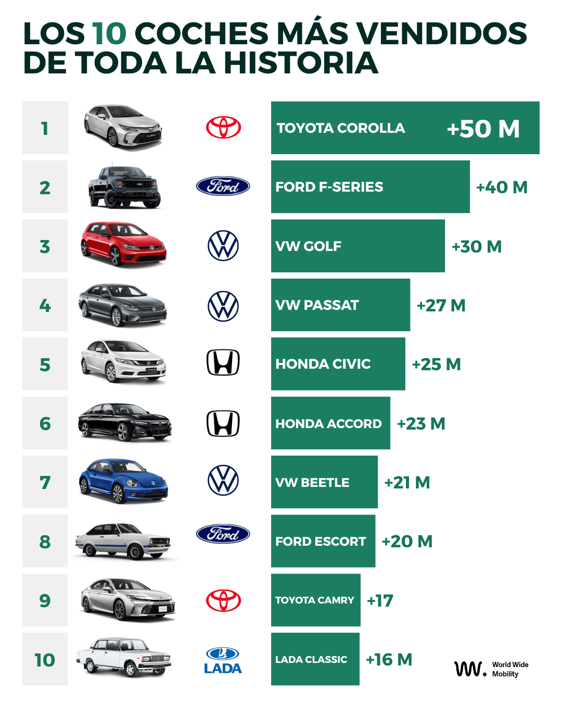
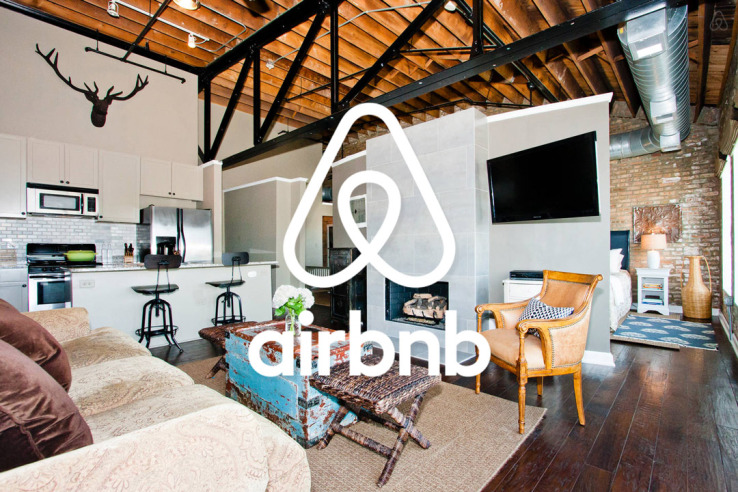

🔍
Análisis de Datos
SQL (PostgreSQL, consultas avanzadas, optimización), Python (pandas, NumPy), EDA, métricas de negocio.
Data Analyst · BI Analyst
Transformo datos complejos en decisiones claras y accionables, uniendo análisis, automatización y visualización con foco en negocio.
Sobre mí
Soy Analista de Datos con una sólida base como Desarrollador Web, lo que me permite entender el dato desde su origen hasta su explotación final. Me especializo en transformar datos reales en insights accionables, combinando SQL, Python, Power BI y GIS con una visión técnica completa y orientada a negocio. Actualmente busco oportunidades como Data Analyst / BI Analyst donde pueda aportar valor desde el primer día y seguir creciendo profesionalmente.
Skills
Un stack equilibrado entre análisis de datos, BI, cloud, GIS y desarrollo web.
SQL (PostgreSQL, consultas avanzadas, optimización), Python (pandas, NumPy), EDA, métricas de negocio.
Power BI (dashboards, DAX, modelado de datos), diseño de KPIs e informes orientados a decisión.
PostgreSQL, PostGIS, modelado de datos, consultas complejas y análisis espacial con QGIS.
GCP y AWS, procesos ETL, integración y automatización de datos, despliegue en servidores en la nube.
HTML, CSS, JavaScript, Angular, Spring, .NET, consumo de APIs REST y buenas prácticas de UX/UI.
Git y GitHub para control de versiones, trabajo en equipo, despliegue de proyectos y metodologías Agile/Scrum.
Proyectos
Una selección de proyectos de datos, BI y desarrollo que combinan análisis y producto.



CV
Resumen rápido de experiencia, formación y dónde descargar mi CV completo.
Experiencia reciente: Analista de Datos en entorno empresarial (150h de prácticas), con foco en análisis, transformación y visualización de datos para apoyar la toma de decisiones. Experiencia previa como Desarrollador Web y como creador de contenido, analizando métricas de audiencia y crecimiento.
Formación: Bootcamp de Data Analytics y formación técnica en desarrollo web y tecnologías de datos.
Contacto
Abierto a oportunidades como Data Analyst / BI Analyst, en remoto o híbrido.